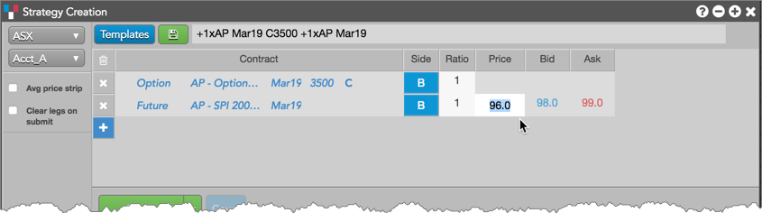

Using the Strategy Creation widget, you can create all User Defined Combinations (UDCs) supported on the ASX NTP platform. You can create and publish both fixed leg and net price strategies, as well as send an RFQ or trade these strategies directly from the widget.
The default price for a futures-only or options-only UDC is net price, but you can also set a fixed price for one of the strategy legs:
To enter a fixed price for a UDC in Strategy Creation, double-click the Price column field for the futures or options leg.

Note: If two UDC strategies are created with the same instruments, they will be published and listed as separate strategies at the exchange if one of the UDCs includes a fixed price leg.